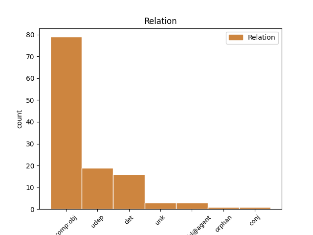
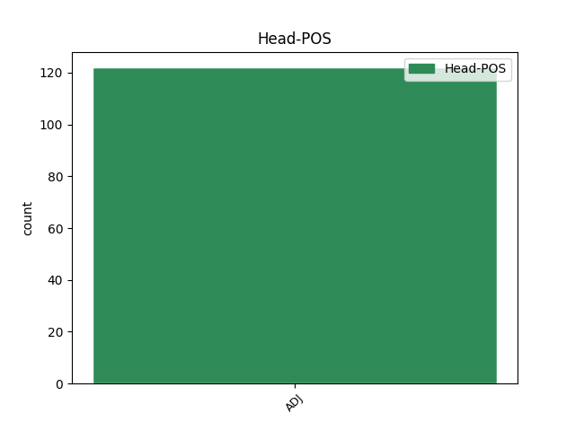
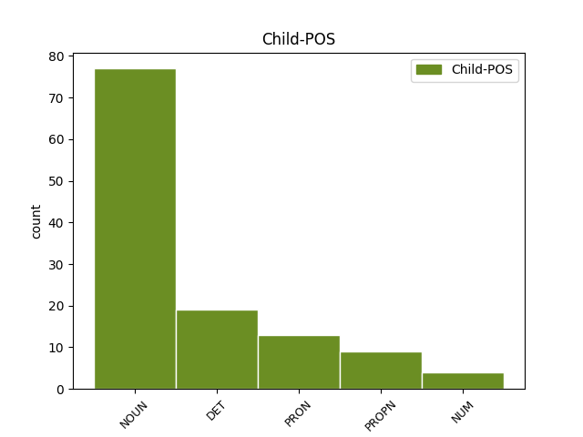

Distribution of features within this leaf



Agreement Rules sorted by frequency.
- When the dependent token is the determiner(det) of the head token, and the head token is ADJ and the dependent token is DET.
1 Netušili _ _ _ _ 0 _ _ _
2 však _ _ _ _ 0 _ _ _
3 , _ _ _ _ 0 _ _ _
4 akí aký DET PAms1:q Animacy=Anim|Case=Nom|Gender=Masc|Number=Sing|PronType=Int,Rel|Typo=Yes 6 det _ _
5 je _ _ _ _ 0 _ _ _
6 múdry múdry ADJ AAms1x Animacy=Anim|Case=Nom|Degree=Pos|Gender=Masc|Number=Sing 0 _ _ _
7 ! _ _ _ _ 0 _ _ _
1 Tu _ _ _ _ 0 _ _ _
2 boli _ _ _ _ 0 _ _ _
3 zvyknutí zvyknutý ADJ Gtmp1x Animacy=Anim|Case=Nom|Degree=Pos|Gender=Masc|Number=Plur|Polarity=Pos|VerbForm=Part|Voice=Pass 0 _ _ _
4 vyberané _ _ _ _ 0 _ _ _
5 spôsoby spôsob NOUN SSip1 Animacy=Inan|Case=Nom|Gender=Masc|Number=Plur 3 comp:obj _ _
6 a _ _ _ _ 0 _ _ _
7 správali _ _ _ _ 0 _ _ _
8 sa _ _ _ _ 0 _ _ _
9 podľa _ _ _ _ 0 _ _ _
10 spoločenských _ _ _ _ 0 _ _ _
11 pravidiel _ _ _ _ 0 _ _ _
12 . _ _ _ _ 0 _ _ _
1 Bola _ _ _ _ 0 _ _ _
2 to _ _ _ _ 0 _ _ _
3 vysoká _ _ _ _ 0 _ _ _
4 plavovláska _ _ _ _ 0 _ _ _
5 s _ _ _ _ 0 _ _ _
6 rozpustenými _ _ _ _ 0 _ _ _
7 vlasmi _ _ _ _ 0 _ _ _
8 a _ _ _ _ 0 _ _ _
9 modrými _ _ _ _ 0 _ _ _
10 očami _ _ _ _ 0 _ _ _
11 , _ _ _ _ 0 _ _ _
12 pery _ _ _ _ 0 _ _ _
13 mala _ _ _ _ 0 _ _ _
14 trochu trochu NUM NUns4 Case=Acc|Gender=Neut|Number=Sing 15 udep _ _
15 hrubé hrubý ADJ AAfp4x Case=Acc|Degree=Pos|Gender=Fem|Number=Plur 0 _ _ _
16 a _ _ _ _ 0 _ _ _
17 namaľované _ _ _ _ 0 _ _ _
18 na _ _ _ _ 0 _ _ _
19 tmavočerveno _ _ _ _ 0 _ _ _
20 . _ _ _ _ 0 _ _ _
1 Z _ _ _ _ 0 _ _ _
2 Pobaltia _ _ _ _ 0 _ _ _
3 pochádzajú _ _ _ _ 0 _ _ _
4 náušnice _ _ _ _ 0 _ _ _
5 podľa _ _ _ _ 0 _ _ _
6 tvaru _ _ _ _ 0 _ _ _
7 zvané zvaný ADJ Gtfp1x Case=Nom|Degree=Pos|Gender=Fem|Number=Plur|Polarity=Pos|VerbForm=Part|Voice=Pass 0 _ _ _
8 vlčí _ _ _ _ 0 _ _ _
9 zub zub NOUN SSis1 Animacy=Inan|Case=Nom|Gender=Masc|Number=Sing 7 udep _ SpaceAfter=No
10 . _ _ _ _ 0 _ _ _
1 Keď _ _ _ _ 0 _ _ _
2 na _ _ _ _ 0 _ _ _
3 mňa _ _ _ _ 0 _ _ _
4 pozrel _ _ _ _ 0 _ _ _
5 a _ _ _ _ 0 _ _ _
6 usmial _ _ _ _ 0 _ _ _
7 sa _ _ _ _ 0 _ _ _
8 , _ _ _ _ 0 _ _ _
9 pripadala _ _ _ _ 0 _ _ _
10 som _ _ _ _ 0 _ _ _
11 si _ _ _ _ 0 _ _ _
12 krásna _ _ _ _ 0 _ _ _
13 , _ _ _ _ 0 _ _ _
14 zbožňovaná zbožňovaný ADJ Gtfs1x Case=Nom|Degree=Pos|Gender=Fem|Number=Sing|Polarity=Pos|VerbForm=Part|Voice=Pass 0 _ _ _
15 a _ _ _ _ 0 _ _ _
16 múdra múdry NOUN SSfs1 Case=Nom|Gender=Fem|Number=Sing 14 conj _ SpaceAfter=No
17 . _ _ _ _ 0 _ _ _
1 “ _ _ _ _ 0 _ _ _
2 Bola _ _ _ _ 0 _ _ _
3 si _ _ _ _ 0 _ _ _
4 úžasná úžasný ADJ AAfs1x Case=Nom|Degree=Pos|Gender=Fem|Number=Sing 0 _ _ _
5 , _ _ _ _ 0 _ _ _
6 Amy amy PROPN SUfs1:r Case=Nom|Gender=Fem|Number=Sing 4 unk _ SpaceAfter=No
7 ! _ _ _ _ 0 _ _ _
1 “ _ _ _ _ 0 _ _ _
2 Aká _ _ _ _ 0 _ _ _
3 ste _ _ _ _ 0 _ _ _
4 nevzdelaná vzdelaný ADJ Gtfs1x Case=Nom|Degree=Pos|Gender=Fem|Number=Sing|Polarity=Neg|VerbForm=Part|Voice=Pass 0 _ _ _
5 , _ _ _ _ 0 _ _ _
6 milá _ _ _ _ 0 _ _ _
7 moja môj DET PFfs1 Case=Nom|Gender=Fem|Number=Sing|Number[psor]=Sing|Person=1|Poss=Yes|PronType=Prs 4 unk _ SpaceAfter=No
8 ! _ _ _ _ 0 _ _ _
9 “ _ _ _ _ 0 _ _ _
10 zvolala _ _ _ _ 0 _ _ _
11 Lolka _ _ _ _ 0 _ _ _
12 . _ _ _ _ 0 _ _ _
1 O _ _ _ _ 0 _ _ _
2 čo _ _ _ _ 0 _ _ _
3 krajší _ _ _ _ 0 _ _ _
4 bol _ _ _ _ 0 _ _ _
5 začiatok _ _ _ _ 0 _ _ _
6 dňa _ _ _ _ 0 _ _ _
7 , _ _ _ _ 0 _ _ _
8 o _ _ _ _ 0 _ _ _
9 to _ _ _ _ 0 _ _ _
10 horší zlý ADJ AAis1y Animacy=Inan|Case=Nom|Degree=Cmp|Gender=Masc|Number=Sing 0 _ _ _
11 koniec koniec NOUN SSis1 Animacy=Inan|Case=Nom|Gender=Masc|Number=Sing 10 unk _ SpaceAfter=No
12 . _ _ _ _ 0 _ _ _
Disagree Examples:
1 Takže _ _ _ _ 0 _ _ _
2 ak _ _ _ _ 0 _ _ _
3 sa _ _ _ _ 0 _ _ _
4 myšlienky _ _ _ _ 0 _ _ _
5 zorganizovať _ _ _ _ 0 _ _ _
6 rockový _ _ _ _ 0 _ _ _
7 festival _ _ _ _ 0 _ _ _
8 chytí _ _ _ _ 0 _ _ _
9 skúsenejší _ _ _ _ 0 _ _ _
10 organizátor _ _ _ _ 0 _ _ _
11 , _ _ _ _ 0 _ _ _
12 veríme _ _ _ _ 0 _ _ _
13 , _ _ _ _ 0 _ _ _
14 že _ _ _ _ 0 _ _ _
15 festival _ _ _ _ 0 _ _ _
16 , _ _ _ _ 0 _ _ _
17 ktorému ktorý DET PAis3 Animacy=Inan|Case=Dat|Gender=Masc|Number=Sing|PronType=Int,Rel 24 comp:obj _ _
18 je _ _ _ _ 0 _ _ _
19 dedina _ _ _ _ 0 _ _ _
20 a _ _ _ _ 0 _ _ _
21 ľudia _ _ _ _ 0 _ _ _
22 v _ _ _ _ 0 _ _ _
23 nej _ _ _ _ 0 _ _ _
24 naklonení naklonený ADJ Gtmp1x Animacy=Anim|Case=Nom|Degree=Pos|Gender=Masc|Number=Plur|Polarity=Pos|VerbForm=Part|Voice=Pass 0 _ _ _
25 , _ _ _ _ 0 _ _ _
26 sa _ _ _ _ 0 _ _ _
27 bude _ _ _ _ 0 _ _ _
28 znova _ _ _ _ 0 _ _ _
29 konať _ _ _ _ 0 _ _ _
30 . _ _ _ _ 0 _ _ _
1 Od _ _ _ _ 0 _ _ _
2 malička _ _ _ _ 0 _ _ _
3 mi ja PRON PPhs3 Case=Dat|Number=Sing|Person=1|PronType=Prs 8 comp:obj _ _
4 bolo _ _ _ _ 0 _ _ _
5 z _ _ _ _ 0 _ _ _
6 každej _ _ _ _ 0 _ _ _
7 strany _ _ _ _ 0 _ _ _
8 vštepovaných vštepovaný ADJ Gtfp2x Case=Gen|Degree=Pos|Gender=Fem|Number=Plur|Polarity=Pos|VerbForm=Part|Voice=Pass 0 _ _ _
9 niekoľko _ _ _ _ 0 _ _ _
10 vecí _ _ _ _ 0 _ _ _
11 . _ _ _ _ 0 _ _ _
1 Musí _ _ _ _ 0 _ _ _
2 byť _ _ _ _ 0 _ _ _
3 pri _ _ _ _ 0 _ _ _
4 tom _ _ _ _ 0 _ _ _
5 také _ _ _ _ 0 _ _ _
6 život život NOUN SSis4 Animacy=Inan|Case=Acc|Gender=Masc|Number=Sing 11 comp:obj _ SpaceAfter=No
7 , _ _ _ _ 0 _ _ _
8 zdravie _ _ _ _ 0 _ _ _
9 a _ _ _ _ 0 _ _ _
10 príčetnosť _ _ _ _ 0 _ _ _
11 ohrozujúce ohrozujúci ADJ Gkns1x Case=Nom|Degree=Pos|Gender=Neut|Number=Sing|Polarity=Pos|VerbForm=Part|Voice=Act 0 _ _ _
12 nasadenie _ _ _ _ 0 _ _ _
13 ? _ _ _ _ 0 _ _ _
1 Pri _ _ _ _ 0 _ _ _
2 špecifikácii _ _ _ _ 0 _ _ _
3 tohoto _ _ _ _ 0 _ _ _
4 druhu _ _ _ _ 0 _ _ _
5 pramenného _ _ _ _ 0 _ _ _
6 materiálu _ _ _ _ 0 _ _ _
7 budem _ _ _ _ 0 _ _ _
8 vychádzať _ _ _ _ 0 _ _ _
9 — _ _ _ _ 0 _ _ _
10 na _ _ _ _ 0 _ _ _
11 rozdiel _ _ _ _ 0 _ _ _
12 od _ _ _ _ 0 _ _ _
13 prameňov _ _ _ _ 0 _ _ _
14 hmotných _ _ _ _ 0 _ _ _
15 — _ _ _ _ 0 _ _ _
16 z _ _ _ _ 0 _ _ _
17 hľadiska _ _ _ _ 0 _ _ _
18 časového _ _ _ _ 0 _ _ _
19 , _ _ _ _ 0 _ _ _
20 ohraničeného ohraničený ADJ Gtns2x Case=Gen|Degree=Pos|Gender=Neut|Number=Sing|Polarity=Pos|VerbForm=Part|Voice=Pass 0 _ _ _
21 11 _ _ _ _ 0 _ _ _
22 storočím storočie NOUN SSns7 Case=Ins|Gender=Neut|Number=Sing 20 comp:obj _ _
23 / _ _ _ _ 0 _ _ _
24 bližšie _ _ _ _ 0 _ _ _
25 pozri _ _ _ _ 0 _ _ _
26 v _ _ _ _ 0 _ _ _
27 kapitole _ _ _ _ 0 _ _ _
28 „ _ _ _ _ 0 _ _ _
29 Formulácia _ _ _ _ 0 _ _ _
30 problému _ _ _ _ 0 _ _ _
31 “ _ _ _ _ 0 _ _ _
32 / _ _ _ _ 0 _ _ _
33 . _ _ _ _ 0 _ _ _
1 Centrom _ _ _ _ 0 _ _ _
2 vladimírskych _ _ _ _ 0 _ _ _
3 mohýl _ _ _ _ 0 _ _ _
4 bolo _ _ _ _ 0 _ _ _
5 Pleščejevské _ _ _ _ 0 _ _ _
6 jazero _ _ _ _ 0 _ _ _
7 , _ _ _ _ 0 _ _ _
8 osídlené osídlený ADJ Gtns1x Case=Nom|Degree=Pos|Gender=Neut|Number=Sing|Polarity=Pos|VerbForm=Part|Voice=Pass 0 _ _ _
9 zmiešaným _ _ _ _ 0 _ _ _
10 slovansko _ _ _ _ 0 _ _ _
11 ‐ _ _ _ _ 0 _ _ _
12 ugrofínskym _ _ _ _ 0 _ _ _
13 obyvateľstvom obyvateľstvo NOUN SSns7 Case=Ins|Gender=Neut|Number=Sing 8 comp:obj _ SpaceAfter=No
14 . _ _ _ _ 0 _ _ _